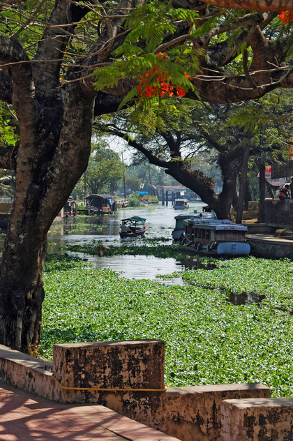
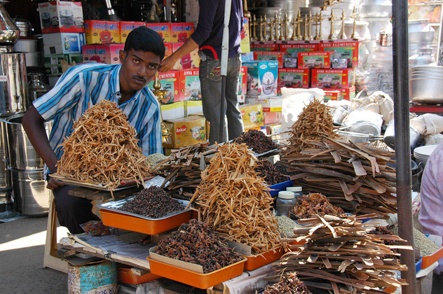
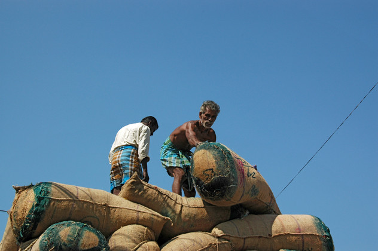

Eine Höllenfahrt in einem kaputten Auto mit einem ständig einschlafenden Fahrer hat uns nach Alappuzha gebracht. Die Inder scheinen insgeheim das Gefühl zu haben, das Linksverkehr nicht richtig sei, denn jede Lücke auf der anderen Spur wird mit mehr Freude befahren als die eigene.
Das Hotel war leider schon voll, so dass wir kurzerhand in das Haus der Eigentümer ausgelagert wurden. Dort haben wir ein tolles Zimmer in einem Anbau. Jedes Mal, wenn wir rausgingen, stand unsere niedliche Gastoma an der Tür und winkte so lange, bis wir außer Sichtweite waren. Das war die einzige Form der Verständigung, die wir gleichermaßen gut beherrschten.
Die Beschreibung des Orts im Reiseführer als "zauberhafte Stadt" ist derart unzutreffend, dass wir es kaum fassen konnten. Statt der erhofften von Palmen beschatteten, von alten Handelshäusern gesäumten Wege sind wir bei Bullenhitze durch dicksten Verkehr gestiefelt. Aber die zwei Kanäle, die die Stadt parallel durchfließen, lassen zumindest die Nähe der Backwaters erahnen.
  
Den Nachmittag haben wir wieder am Strand verbracht. Diesmal aber mit einem reizenden Rikschafahrer, der sogar ein kleines Gästebüchlein in seiner Rikscha hatte. Und der Strand war auch traumhaft, weil er weiß, lang, locker bepalmt und inderfrei war. Das Wasser war fast zu warm um zu erfrischen - perfekt also.